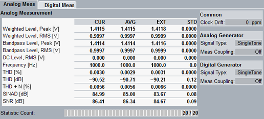

The "Analog Meas" tab and the "Digital Meas" tab are available for scenarios involving an internal audio measurement. They show measurement results on the left and the most important generator settings on the right.

Which measurement results are available, depends on the signal type of the generator coupled to the measurement. If no generator is coupled to the measurement, the signal type "Single Tone" is expected.
Result diagrams can be enlarged, so that the generator settings are no longer visible.
For a description of the measurement results for the individual signal types and configuration of the result presentation, see "Measurement Results".
The currently used/expected signal type can be queried via the following commands.
Remote command:The results of the analog measurement can be queried via the following remote commands.
Remote command:The results of the digital measurement can be queried via the following remote commands.
Remote command: